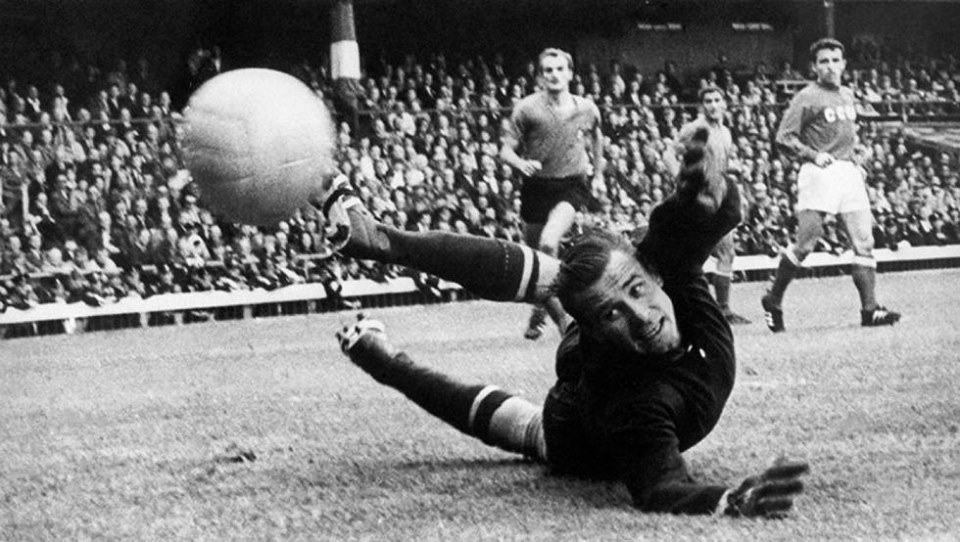

La 'araña negra' logró el 'Balón de Oro' en 1963, en una época en la que el trofeo sólo se entregaba a los jugadores que militaban en Europa y en la que no había ninguna discusión de que el guardameta ruso era el mejor de todo el continente.
Yashin destacó por sus reflejos felinos y una gran agilidad bajo los palos que le hacían prácticamente imbatible. Algo que acrecentó su leyenda como uno de los mejores porteros de siempre. Además, también fue un innovador dentro del terreno de juego, puesto que fue el primer meta que comenzó a utilizar guantes, algo que más tarde copió el resto.
Uno de los que copió esa tendencia fue el italiano Dino Zoff, que en 1973 se quedó a un paso de emular a Yashin también en lo de ganar el 'Balón de Oro', ya que quedó segundo en la clasificación del premio, por detrás del holandés Johan Cruyff. El transalpino había hecho méritos más que suficientes para ganar el codiciado galardón, como mantener la portería de la Juventus imbatida durante 903 minutos, pero los goles del ‘tulipán’ acabaron pesando más.
El último portero que rozó la hazaña de ganar el 'Balón de Oro' fue el alemán Oliver Kahn, que finalizó tercero en las ediciones de 2001 y 2002. En 2001 pese a que ganó la Liga de Campeones con el Bayern de Munich, en gran medida gracias a los penaltis que detuvo en la tanda de penas máximas en las que se decidió el trofeo, el título fue a parar en manos del inglés Michael Owen, que en aquel año ganó la Copa de la UEFA. En 2002 el galardón recayó sobre el brasileño Ronaldo, entonces flamante campeón del mundo.
“Un cigarrillo para calmar los nervios y un trago de vodka para calentar los músculos”, señaló alguna vez Yashin. Justamente, sus vicios lo llevaron a la tumba.